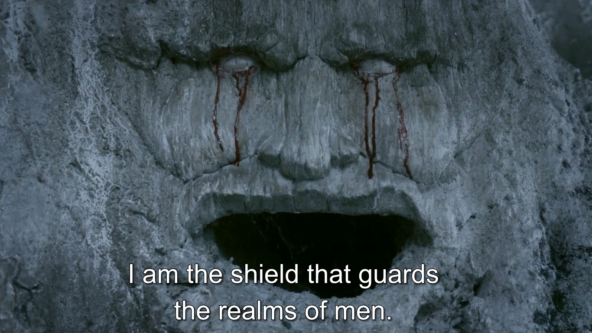
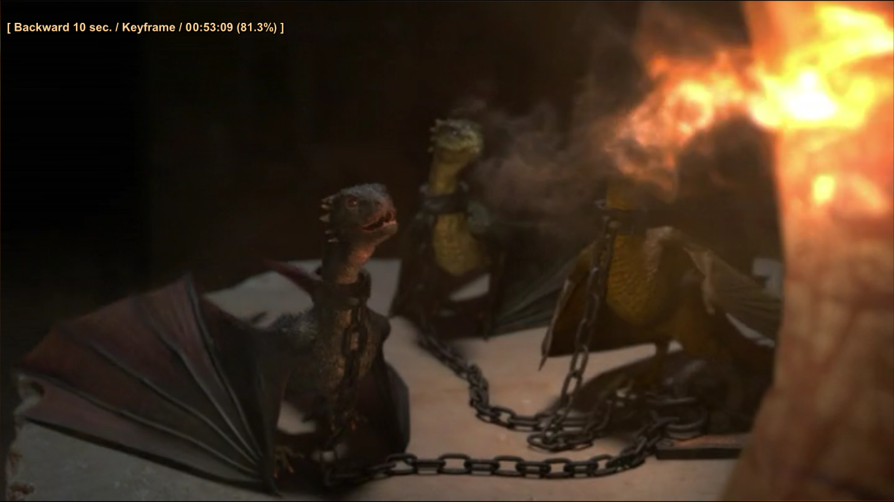

With Joffrey king and headless Ned very much dead, Westeros is gripped by rebellion. In the North Ned's eldest son Robb (Richard Madden) has declared war, taking prisoner Jaime Lannister in an early skirmish. Likewise intent on unseating Joffrey is Robert Baratheon's brother Stannis (Stephen Dillane). He is more dutiful and level-headed than Robert (good), but also convinced he is marked for greatness by the "Lord of Light" – a pagan deity demanding human sacrifice (not good).
Just how not good this quickly becomes obvious. His supernatural counsellor Melisandre (Carice van Houten) sends a "smoke monster" to kill Renly Baratheon (Gethin Anthony), Stannis's dear brother and rival for the throne. Meanwhile, anyone daring speak against the Lord of Light is likely to end up strapped to a pyre and subjected to impromptu barbecuing.
Richard Madden as Robb Stark
Robb likewise demonstrates questionable judgement as he sends childhood chum Theon (Alfie Allen) – a prince of the Iron Isles raised in Winterfell – back to his maritime home to gain the support of father Balon. Rather than rallying to the Stark banner, Balon guilt-trips Theon , who opportunistically seizes Winterfell for the Greyjoys. Bran is forced to flee north with his simple-minded minder Hodor (Theon hangs two farmer boys in the place of Bran and brother Rickon).
Also on the run is Arya Stark who fetches up at the fortress of Harrenhal where Tywin Lannister (Charles Dance), patriarch of the most Evil Family in Westeros, unwittingly appoints the disguised princess his cup-bearer. She later flees, with the assistance of the mysterious Jaqen H'ghar (Thomas Wlaschiha) of the Faceless Men of Essos.
Over on the eastern continent, it's proving a long and aimless road of Daenerys, her baby dragons and shrinking Dothraki army. Eventually they make their way to the desert City of Qarth where they are befriended by silver-tongued merchant Xaro Daxos. However, they are ultimately betrayed by Daxos, in cahoots with the warlock Pyat Pree. With her dragons Cersei defeats the sorcerer and seals Daxos (along with her traitorous servant Doreah) in a tomb. Don't muck about with the Mother of Dragons.
Nikolaj Coster-Waldau as Janie Lannister
Nikolaj Coster-Waldau as Janie Lannister
Elsewhere, what will become known as the War of the Five Kings rumbles on. As Robb plots his next move against the Lannisters, Catelyn sets Jamie free. He is to be escorted to King's Landing by Brienne of Tarth (Gwendoline Christie) – Renly's loyal former bodyguard – in the hope of securing the release of Sansa and Arya.

On a scouting mission north of the Wall Jon is kidnapped by the Wildling Ygritte (Rose Leslie) – a meet-cute that sets in train a tragic love affair. No such excitement awaits the other Rangers of the Watch, as they are attacked by the White Walkers and their servant wights. In King's Landing, Stannis's invasion fleet has hoved into view. With useless Joffrey in charge, everyone expects the worst (especially Cersei, who paints for Sansa a bleak picture of the treatment they can expect). Hand of the King Tyrion has a cunning plan, however. As Joffrey weeps like the wimp he is, his uncle repels Stannis's forces with explosive wildfire, stocks of which the Mad King concealed beneath the city. It's enough to keep the enemies at bay until Tywin Lannister gallops to the rescue.